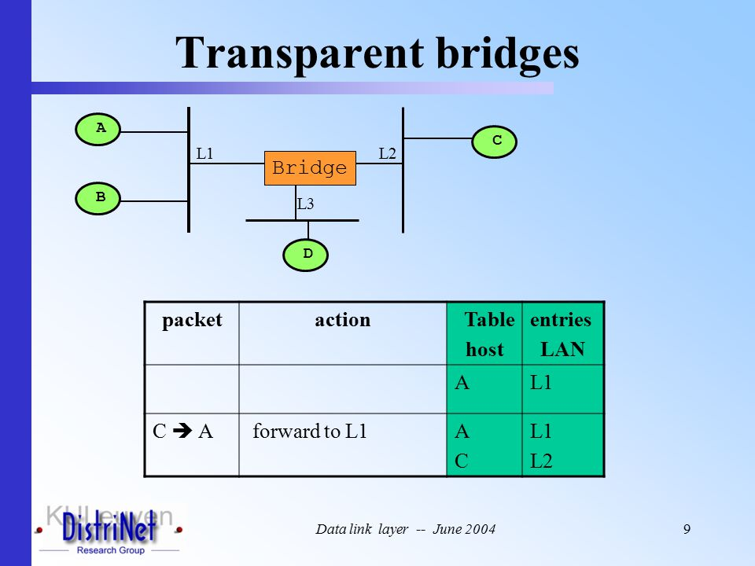
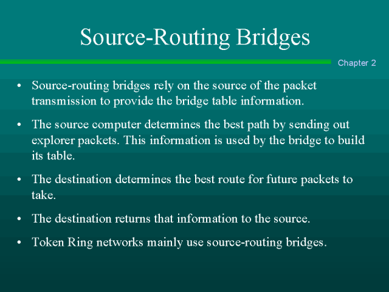
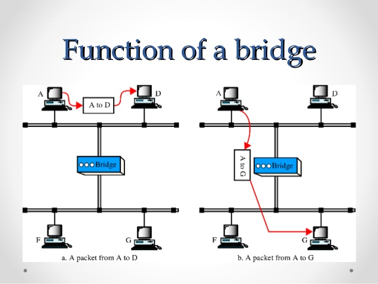

Bridges are networking devices that connect networks. Sometimes it is necessary to divide networks into subnets to reduce the amount of traffic on each larger subnet or for security reasons. Once divided, the bridge connects the two subnets and manages the traffic flow between them. Today, network switches have largely replaced bridges.
A bridge functions by blocking or forwarding data, based on the destination MAC address written into each frame of data. If the bridge believes the destination address is on a network other than that from which the data was received, it can forward the data to the other networks to which it is connected. If the address is not on the other side of the bridge, the data is blocked from passing. Bridges "learn" the MAC addresses of devices on connected networks by "listening" to network traffic and recording the network from which the traffic originates.
Types of Bridges
Three types of bridges are used in networks. You don’t need detailed knowledge of how each bridge works, but you should have an overview:
Transparent bridge—A transparent bridge is invisible to the other devices on the network. Transparent bridges perform only the function of blocking or forwarding data based on the MAC address; the devices on the network are oblivious to these bridges’ existence. Transparent bridges are by far the most popular types of bridges.

Translational bridge—A translational bridge can convert from one networking system to another. As you might have guessed, it translates the data it receives. Translational bridges are useful for connecting two different networks, such as Ethernet and Token Ring networks. Depending on the direction of travel, a translational bridge can add or remove information and fields from the frame as needed.
Source-route bridge—Source-route bridges were designed by IBM for use on Token Ring networks. The source-route bridge derives its name from the fact that the entire route of the frame is embedded within the frame. This allows the bridge to make specific decisions about how the frame should be forwarded through the network. The diminishing popularity of Token Ring makes the chances that you’ll work with a source-route bridge very slim.

How a bridge works
A bridge works at the data link layer of the OSI model, meaning that it operates using the physical addresses of the machines. In reality, the bridge is linked to several local area networks, called segments. The bridge creates a function table with the machines' addresses and the segments they belong to, and "listens" to the data running through the segments.
When data is transmitted, the bridge checks the function table for the segment the sending and receiving computers belong to (using their physical address, called the MAC address, and not their IP address). If they belong to the same segment, the bridge does nothing; otherwise, it switches the data over to the destination computer's segment.

What use is a bridge?
The bridge is used to segment a network, meaning that in the diagram shown above, communication between the three computers on top will not obstruct the lines running between the three computers on the bottom. The information will only pass through when a computer on one side of the bridge sends data to a computer on the other side.
What's more, these bridges can be linked to a modem, so they can work with a remote local area network as well.